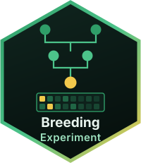

Breeding data and relationship matrices
Muhammad Farooqi
Source:vignettes/BreedingExperiment.Rmd
BreedingExperiment.Rmd
library(BreedingExperiment)
#> Loading required package: SummarizedExperiment
#> Loading required package: MatrixGenerics
#> Loading required package: matrixStats
#>
#> Attaching package: 'MatrixGenerics'
#> The following objects are masked from 'package:matrixStats':
#>
#> colAlls, colAnyNAs, colAnys, colAvgsPerRowSet, colCollapse,
#> colCounts, colCummaxs, colCummins, colCumprods, colCumsums,
#> colDiffs, colIQRDiffs, colIQRs, colLogSumExps, colMadDiffs,
#> colMads, colMaxs, colMeans2, colMedians, colMins, colOrderStats,
#> colProds, colQuantiles, colRanges, colRanks, colSdDiffs, colSds,
#> colSums2, colTabulates, colVarDiffs, colVars, colWeightedMads,
#> colWeightedMeans, colWeightedMedians, colWeightedSds,
#> colWeightedVars, rowAlls, rowAnyNAs, rowAnys, rowAvgsPerColSet,
#> rowCollapse, rowCounts, rowCummaxs, rowCummins, rowCumprods,
#> rowCumsums, rowDiffs, rowIQRDiffs, rowIQRs, rowLogSumExps,
#> rowMadDiffs, rowMads, rowMaxs, rowMeans2, rowMedians, rowMins,
#> rowOrderStats, rowProds, rowQuantiles, rowRanges, rowRanks,
#> rowSdDiffs, rowSds, rowSums2, rowTabulates, rowVarDiffs, rowVars,
#> rowWeightedMads, rowWeightedMeans, rowWeightedMedians,
#> rowWeightedSds, rowWeightedVars
#> Loading required package: GenomicRanges
#> Loading required package: stats4
#> Loading required package: BiocGenerics
#> Loading required package: generics
#>
#> Attaching package: 'generics'
#> The following objects are masked from 'package:base':
#>
#> as.difftime, as.factor, as.ordered, intersect, is.element, setdiff,
#> setequal, union
#>
#> Attaching package: 'BiocGenerics'
#> The following objects are masked from 'package:stats':
#>
#> IQR, mad, sd, var, xtabs
#> The following objects are masked from 'package:base':
#>
#> anyDuplicated, aperm, append, as.data.frame, basename, cbind,
#> colnames, dirname, do.call, duplicated, eval, evalq, Filter, Find,
#> get, grep, grepl, is.unsorted, lapply, Map, mapply, match, mget,
#> order, paste, pmax, pmax.int, pmin, pmin.int, Position, rank,
#> rbind, Reduce, rownames, sapply, saveRDS, table, tapply, unique,
#> unsplit, which.max, which.min
#> Loading required package: S4Vectors
#>
#> Attaching package: 'S4Vectors'
#> The following object is masked from 'package:utils':
#>
#> findMatches
#> The following objects are masked from 'package:base':
#>
#> expand.grid, I, unname
#> Loading required package: IRanges
#> Loading required package: Seqinfo
#> Loading required package: Biobase
#> Welcome to Bioconductor
#>
#> Vignettes contain introductory material; view with
#> 'browseVignettes()'. To cite Bioconductor, see
#> 'citation("Biobase")', and for packages 'citation("pkgname")'.
#>
#> Attaching package: 'Biobase'
#> The following object is masked from 'package:MatrixGenerics':
#>
#> rowMedians
#> The following objects are masked from 'package:matrixStats':
#>
#> anyMissing, rowMedians
#> Warning: replacing previous import 'S4Arrays::makeNindexFromArrayViewport' by
#> 'DelayedArray::makeNindexFromArrayViewport' when loading 'SummarizedExperiment'A quantitative-genetic analysis needs four things at once: the marker genotypes, the phenotypes, the pedigree, and where the markers sit on the genome. Keeping them in four separate objects is where mistakes creep in, as soon as one of them is filtered or reordered.
BreedingExperiment keeps them together. It extends
RangedSummarizedExperiment, so markers are rows,
individuals are columns, and the marker positions are a
GRanges. Everything you already know about Bioconductor
containers applies, and subsetting can never desynchronise the
parts.
The demonstration data
The package ships with demoBreeding, a simulated
five-generation population built to behave like a real programme rather
than a textbook example.
data(demoBreeding)
be <- demoBreeding
be
#> class: BreedingExperiment
#> markers: 900 individuals genotyped: 120
#> assays(1): genotype
#> phenotypes(6): generation sex yield stature trueBV_yield trueBV_stature
#> sequences(10): chr1 chr2 chr3 chr4 chr5 chr6
#> pedigree: 180 individuals (120 genotyped, 60 not; 30 founders)Read the last line carefully: the pedigree describes 180
individuals but only 120 were genotyped. The two earliest
generations were born before genotyping began. That is the normal
situation in a breeding programme, and it is the reason
Hmatrix() exists.
The data also carry the other awkward features of real records — a trait measured on one sex only, a little missing genotype data, and unequal family sizes because a few sires were used heavily.
table(SummarizedExperiment::colData(be)$generation)
#>
#> 3 4 5
#> 35 40 45
summary(SummarizedExperiment::colData(be)$yield) # females only
#> Min. 1st Qu. Median Mean 3rd Qu. Max. NAs
#> 4203 5605 5934 6000 6278 8097 54If you would rather generate your own population,
simulateBreeding() does that.
The standard accessors work:
dim(be)
#> [1] 900 120
genotypes(be)[1:4, 1:5]
#> C0001 C0002 C0003 C0004 C0005
#> snp00001 2 2 1 1 2
#> snp00002 1 0 2 1 1
#> snp00003 2 2 2 1 1
#> snp00004 2 1 2 1 0
head(SummarizedExperiment::colData(be), 3)
#> DataFrame with 3 rows and 6 columns
#> generation sex yield stature trueBV_yield trueBV_stature
#> <integer> <factor> <numeric> <numeric> <numeric> <numeric>
#> C0001 3 M NA 158.3 -0.3883 1.5128
#> C0002 3 M NA 139.3 0.8635 -0.5965
#> C0003 3 M NA 129.0 -0.3502 -1.7890
head(pedigree(be), 3)
#> DataFrame with 3 rows and 3 columns
#> id sire dam
#> <character> <character> <character>
#> 1 A0001 NA NA
#> 2 A0002 NA NA
#> 3 A0003 NA NABecause markers are genomic ranges, a data set can be cut down to a region:
chr1 <- be[as.character(GenomicRanges::seqnames(
SummarizedExperiment::rowRanges(be))) == "chr1", ]
dim(chr1)
#> [1] 90 120Your own data goes in the same way:
Quality control
nrow(be)
#> [1] 900
be <- filterMarkers(be, min_maf = 0.05, min_call_rate = 0.9)
be <- imputeMarkers(be)
nrow(be)
#> [1] 801
head(alleleFrequency(be), 3)
#> DataFrame with 3 rows and 4 columns
#> freq maf callRate heterozygosity
#> <numeric> <numeric> <numeric> <numeric>
#> snp00001 0.707627 0.2923729 1 0.475000
#> snp00002 0.605932 0.3940678 1 0.508333
#> snp00003 0.920168 0.0798319 1 0.158333Relationships from the pedigree
Amatrix() builds the numerator relationship matrix. Its
entries are the familiar textbook values: one half between parent and
offspring, one quarter between grandparent and grandchild.
A <- Amatrix(be)
round(A[1:5, 1:5], 3)
#> A0001 A0002 A0003 A0004 A0005
#> A0001 1 0 0 0 0
#> A0002 0 1 0 0 0
#> A0003 0 0 1 0 0
#> A0004 0 0 0 1 0
#> A0005 0 0 0 0 1The diagonal carries inbreeding:
summary(inbreeding(be))
#> Min. 1st Qu. Median Mean 3rd Qu. Max.
#> 0.00000 0.00000 0.00000 0.03941 0.06445 0.18750Relationships from the markers
Gmatrix() is the genomic relationship matrix. It
measures what actually happened rather than what was expected: two full
sibs have a pedigree relationship of exactly 0.5, but their genomic
relationship varies around it, because Mendelian sampling gave them
different halves of their parents.
G <- Gmatrix(be)
round(G[1:5, 1:5], 3)
#> C0001 C0002 C0003 C0004 C0005
#> C0001 0.962 0.016 -0.112 -0.165 -0.184
#> C0002 0.016 1.094 -0.056 -0.073 0.057
#> C0003 -0.112 -0.056 1.143 0.080 0.099
#> C0004 -0.165 -0.073 0.080 1.002 0.057
#> C0005 -0.184 0.057 0.099 0.057 1.078The two agree in the aggregate, which is a useful sanity check on any data set:
Dmatrix() gives the dominance relationships, orthogonal
to the additive ones, for models that separate the two.
Combining both: the single-step matrix
Using only G discards every ungenotyped relative. Using
only A discards the markers. Hmatrix() keeps
both, and covers every individual in the pedigree:
The genotyped block comes from the markers, the ungenotyped block
from the pedigree corrected by what the markers say about genotyped
relatives, and the off-diagonal blocks connect them. Two checks confirm
the behaviour: blending entirely towards the pedigree returns
A22, and the result stays positive definite.
H1 <- Hmatrix(be, blend = 1, tune = FALSE)
max(abs(H1[gen, gen] - A22))
#> [1] 0
min(eigen(H, only.values = TRUE)$values) > 0
#> [1] TRUEH is the relationship structure used by single-step
genomic prediction. Pass it, or its inverse, to whichever mixed-model
solver you prefer.
Session information
sessionInfo()
#> R version 4.6.1 (2026-06-24)
#> Platform: x86_64-pc-linux-gnu
#> Running under: Ubuntu 24.04.4 LTS
#>
#> Matrix products: default
#> BLAS: /usr/lib/x86_64-linux-gnu/openblas-pthread/libblas.so.3
#> LAPACK: /usr/lib/x86_64-linux-gnu/openblas-pthread/libopenblasp-r0.3.26.so; LAPACK version 3.12.0
#>
#> locale:
#> [1] LC_CTYPE=C.UTF-8 LC_NUMERIC=C LC_TIME=C.UTF-8
#> [4] LC_COLLATE=C.UTF-8 LC_MONETARY=C.UTF-8 LC_MESSAGES=C.UTF-8
#> [7] LC_PAPER=C.UTF-8 LC_NAME=C LC_ADDRESS=C
#> [10] LC_TELEPHONE=C LC_MEASUREMENT=C.UTF-8 LC_IDENTIFICATION=C
#>
#> time zone: UTC
#> tzcode source: system (glibc)
#>
#> attached base packages:
#> [1] stats4 stats graphics grDevices utils datasets methods
#> [8] base
#>
#> other attached packages:
#> [1] BreedingExperiment_0.99.4 SummarizedExperiment_1.42.0
#> [3] Biobase_2.72.0 GenomicRanges_1.64.0
#> [5] Seqinfo_1.2.0 IRanges_2.46.0
#> [7] S4Vectors_0.50.1 BiocGenerics_0.58.1
#> [9] generics_0.1.4 MatrixGenerics_1.24.0
#> [11] matrixStats_1.5.0 BiocStyle_2.40.0
#>
#> loaded via a namespace (and not attached):
#> [1] Matrix_1.7-5 jsonlite_2.0.0 compiler_4.6.1
#> [4] BiocManager_1.30.27 jquerylib_0.1.4 systemfonts_1.3.2
#> [7] textshaping_1.0.5 yaml_2.3.12 fastmap_1.2.0
#> [10] lattice_0.22-9 XVector_0.52.0 R6_2.6.1
#> [13] S4Arrays_1.12.0 knitr_1.51 DelayedArray_0.38.2
#> [16] bookdown_0.47 desc_1.4.3 bslib_0.11.0
#> [19] rlang_1.3.0 cachem_1.1.0 xfun_0.60
#> [22] fs_2.1.0 sass_0.4.10 otel_0.2.0
#> [25] SparseArray_1.12.2 cli_3.6.6 pkgdown_2.2.1
#> [28] digest_0.6.39 grid_4.6.1 lifecycle_1.0.5
#> [31] evaluate_1.0.5 ragg_1.5.2 abind_1.4-8
#> [34] rmarkdown_2.31 tools_4.6.1 htmltools_0.5.9